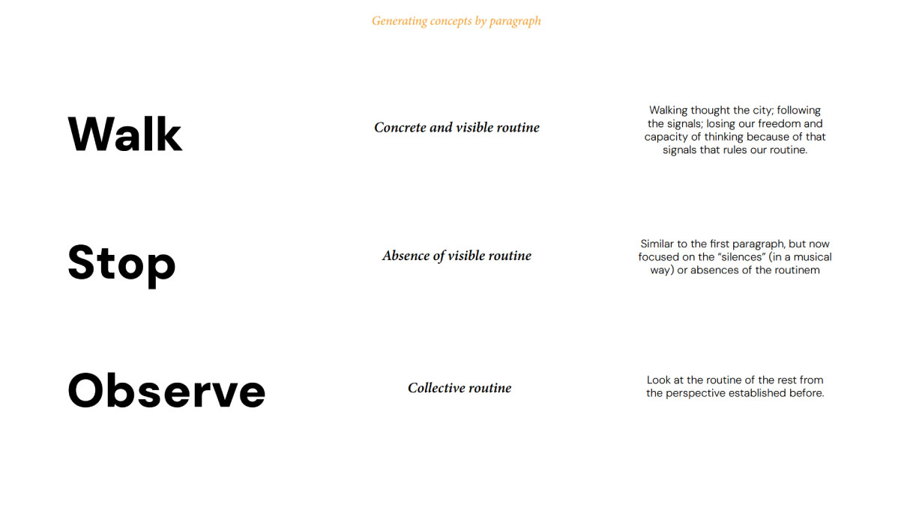
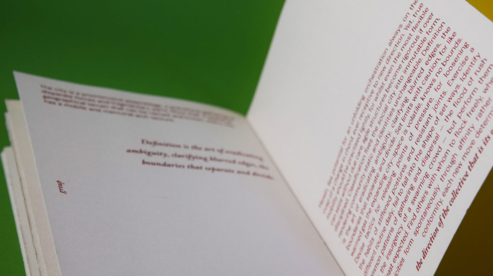
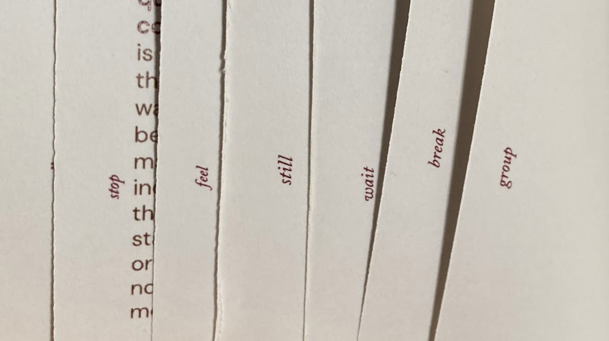
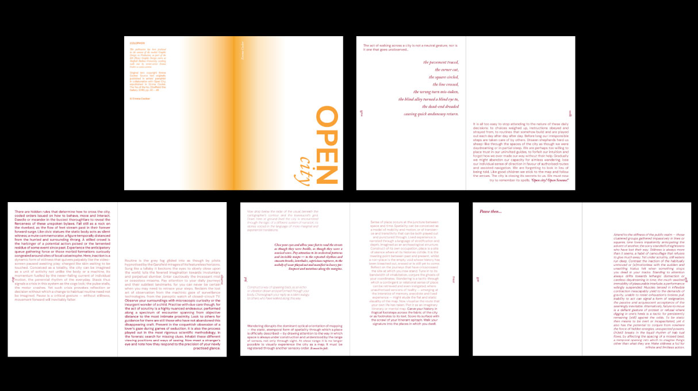

Open City (first version)
Open City es una publicación editorial desarrollada en el marco del módulo Graphic Design in Production, como parte del programa BA (Hons) Graphic Design en Sheffield Hallam University (Reino Unido). El proyecto toma como base el texto de la escritora y artista Emma Cocker, el cual reflexiona sobre cómo habitamos la ciudad, cómo nuestras rutinas diarias—caminar, detenerse, observar—están guiadas por señales que condicionan nuestra libertad y pensamiento.
A partir del análisis por párrafos, se generaron conceptos clave que guiaron la elección tipográfica, la composición gráfica y el desarrollo de una pieza editorial acompañada de un objeto conceptual. La publicación explora el ritmo urbano como si fuera una partitura, en la que se alternan presencias, silencios y patrones colectivos.
Este ensayo visual propone una mirada crítica y poética a la rutina, donde lo cotidiano se vuelve narrativo, musical y profundamente humano.
   